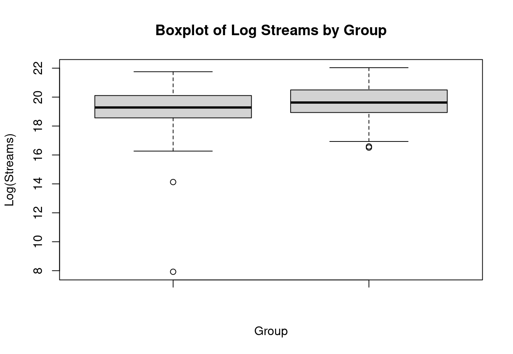

Decoding Spotify Popularity
In the music industry, featured artists are considered a cheat code for virality. But does adding more artists actually guarantee more streams? I built an end-to-end statistical pipeline to find out.
The Context
Record labels and independent musicians frequently invest heavy budgets into collaborative tracks, operating on the assumption that combining artist fanbases mathematically ensures greater reach.
The goal of this project was to move past industry intuition and apply rigorous statistical testing to real Spotify data. Specifically, I wanted to answer two fundamental questions:
1. Stream Volume
Do collaborative tracks inherently generate a statistically higher mean of streams compared to tracks exclusively by a solo artist?
2. Chart Probability
Are collaborative tracks statistically more likely to break into the Spotify Global Charts?
Data Engineering & The Pipeline
Analytical models are only as reliable as the data fed into them. Working with a raw dataset of 952 tracks, the data initially contained formatting issues that broke standard mathematical functions.
- SQL Profiling: Used SQLite (
sqlite_master,LIMITqueries) to rapidly profile the schema, validate total row counts, and understand the raw data structure before loading it into memory. - Aggressive Coercion (R): The
streamscolumn was improperly formatted as character strings. I applied numeric casting while actively isolating and suppressing coercion warnings to cleanly identify and dropNArows without corrupting the dataset. - Feature Engineering: Created a binary
chartedflag and a categoricalgroupsegment based on artist counts. - Logarithmic Transformation: Streaming data suffers from extreme positive skew (a few tracks have billions of streams, most have thousands). I engineered a
log_streamsfeature to normalize the distribution, making it suitable for a t-test.
Finding 1: Log-Streams
To evaluate if collaborations trigger a higher volume of streams, I executed a Welch Two-Sample t-test (one-sided) targeting the engineered log_streams metric.
The results contradicted industry assumptions entirely. The mean log-streams for collaborations (19.29) was actually slightly lower than solo tracks (19.64).
Result: Fail to reject H0 (p = 1)
There is absolutely no statistical evidence supporting the theory that collaborative songs yield a higher average stream count than solo tracks.

Finding 2: Charting Probability
While absolute stream counts didn't favor collaborations, I hypothesized they might still act as a viral catalyst, pushing songs onto the Spotify charts faster. To test this, I ran a Two-Proportion Z-Test.
Collab Chart Rate (218 of 366 tracks)
Solo Chart Rate (330 of 586 tracks)
Despite a visible 3.2% increase in charting frequency for collaborations, the statistical p-value returned at 0.179.
Result: Fail to reject H0
The observed increase is not statistically significant. We cannot confidently claim that collaborations improve the likelihood of a song charting.
Limitations & What I Learned
A crucial step in rigorous analytics is acknowledging the mathematical limits of a model. To validate my findings, I ran a Statistical Power Analysis (power.prop.test) aiming to detect a true 10% difference in charting rates with an 80% detection chance.
The test revealed that 388 rows per group were required. Because my collaboration group only contained 366 valid rows, the dataset was marginally underpowered to detect that specific effect size.
Final Takeaways
- Data Cleaning is Paramount: A single improperly formatted string can break an entire statistical pipeline. Aggressive, precise cleaning was the most critical step of this project.
- Data > Intuition: The music industry heavily favors collaborations, but the data proved that solo tracks hold their ground flawlessly. Real-world data often contradicts widely accepted assumptions.
- Causation vs. Correlation: This was an observational dataset. While we found no significant popularity boost from collaborations, proving definitive causation would require randomized control testing.